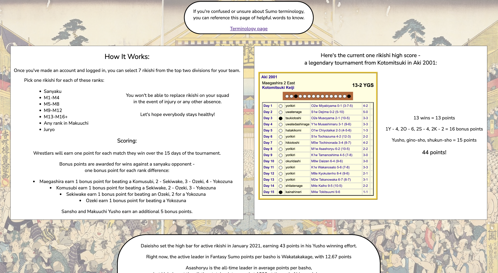
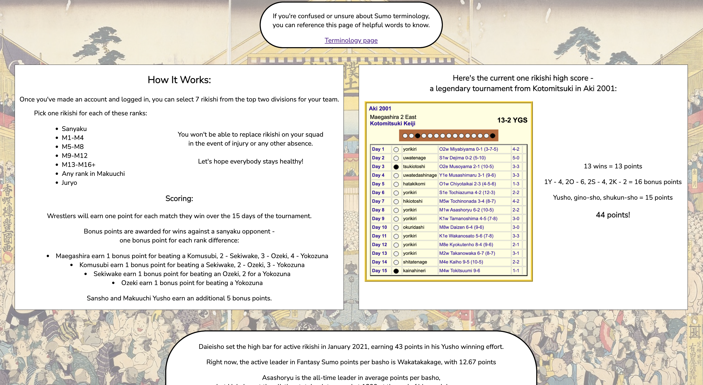

I just finished my Software Engineering course at the Flatiron School!
I decided to study software engineering and learn more about computer science when I noticed that my creative interests became much more computer-based since early 2020.
Around that time I started learning about electronic music and Ableton Live. My listening adventures inspired me to make music in new ways, exploring synthesis, sound design, sampling, live looping, scripting, and automation. Once I realized that I was making music by programming a computer, I started learning about other things you can do by programming computers, and I got into Software Engineering!
During my time studying at Flatiron, I learned about JavaScript, React.js, Ruby on Rails, SQL & PostgreSQL, Sinatra & ActiveRecord, HTML, CSS, and Git. I used these languages and frameworks to develop & deploy Full-Stack web applications, working independently or with a partner, and assisted and communicated with my peers in my course to ensure that we all developed a solid and wide-ranging foundation of Software Engineering knowledge and skills.
Now that I've finished my Flatiron course, I'm excited to use my fresh knowledge and skills to find full-time work as a Software Engineer, to contribute to an exciting and supportive team of developers, and to share what I've learned to help others.

 
